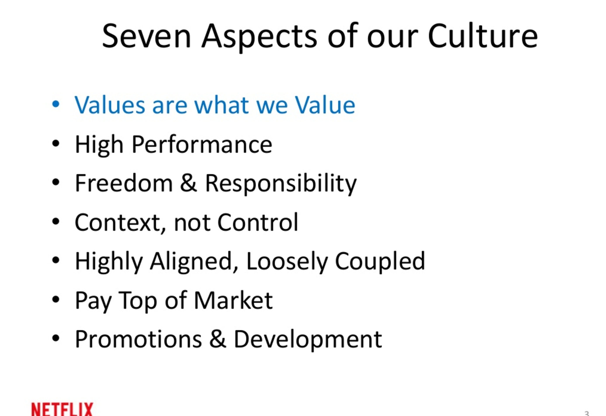

“You see, when you have a pack of designers roaming your halls, it’s hard for analytical cultures to integrate creative ones. The reason being that analytical cultures traditionally start with an answer, and then break the problem down into its constituent parts, whereas creative cultures start with questions and look at problems holistically. … Solving [these new] questions can’t be limited to digital experiences. We’ve been working on those for 30 years, and our hunch is that they’ve reached a ‘peak design’ moment. That’s not to suggest that digital experiences are unimportant or can’t get any better, but simply that they’ve become commoditized at this point.” — Tim Brown of IDEO
In this quote, Tim Brown is suggesting that designers have to find new ways to interact with companies other than making them more digital.
These days, companies have become far more interested in experimenting with work organization. Companies like Google, Spotify, and Medium are focusing a lot more on teamwork. Netflix’s CTO claimed in a slide deck that their guiding principal was to focus on their the right talent and work culture as opposed to faster growth. Facebook’s COO Sheryl Sandberg calls it “the most important document to come from Silicon Valley.”
Recently, companies have realized that UX designers are a good resource to discover new ways of working. As organizational design is becoming more and more prominent, it’s important for UX designers to learn about it. The main focus is to make sure that people embrace change and work well together in small groups.
The role of a UX designer would be to improve team organization and develop processes to help these teams solve creative challenges. There needs to be an effective way for people to engage with each other. People of different disciplines must be engaging with each other. Communication is key. The most important role of a UX designer, by far, is achieving effective communication within companies.